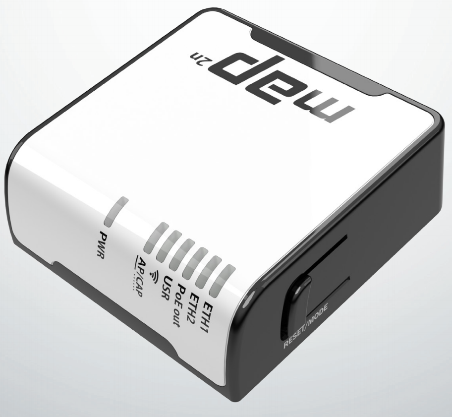

MikroTik в роли тестера сети

Приобрели MikroTik RouterBoard mAP 2n. Отличная модель. Поиграв с ним вдоволь, решили задействовать в качестве тестера малой провайдерской сети. Очень часто, чтобы проверить состояние сети, необходимо расчехлять ноутбук, что порой крайне неудобно в виду расположения оборудования в подвалах, чердаках. Заменить ноутбук полностью, конечно, невозможно, но стандартные тесты можно переложить на плечи нашего «маленького друга». Об этом и будет идти речь в моем посте.
Одна из особенностей mAP 2n — это наличие в нем microUSB, по которому роутер можно питать. Данная особенность дает возможность совместно с портативным зарядным устройством использовать роутер мобильно. В качестве портативного зарядного устройства был выбран HIPER WP-222. В основном его выбор был обусловлен ценой, ну а его водонепроницаемый корпус и наличие фонарика окончательно убедил нас в правильности решения.

Для тестера необходим канал связи с человеком. Первая мысль была задействовать спикер, на котором можно посредством RouterOS творить чудеса, но, к сожалению mAP 2n обделили им. Все, что осталось — это задействовать LED-индикацию. У mAP 2n на передней панели есть 7 светодиодов: Power — им управлять нельзя, один красный — питание кого либо по второму порту и 5 зеленых (WI-Fi, Eth1,2 USR, AP/CAP). Управлять светодиодом можно, назначив ему бридж интерфейс. Включаем, интерфейс светодиод загорается, отключаем — гаснет.
/system leds
set 1 interface=br1 type=interface-status
/interface bridge
set br1 disabled=yes; # гаснет
set br1 disabled=no; # загорается
Кроме того, чтобы оповестить человека, мы должны придумать, как получить от него какую либо команду. Долго копал в сторону кнопки Reset/Mode, но ничего толком не узнал кроме возможности сбросить настройки, а хотелось бы знать, что же это такое Mode. Пришлось придумать нечто иное. У mAP 2n на борту есть два 10/100 Ethernet порта. По первому роутер можно питать, а по второму он сам будет источником питания, более того, роутер в состоянии определить, что к нему подключили устройство, которое можно питать. Это происходит ввиду наличие сопротивления на 4,5 — 7,8 контактах Ethernet порта от 3kΩ до 26.5kΩ. Не долго думая, соорудили на основе Ethernet коннектора, кнопки от корпуса ПК и резистора на 4kΩ следующую штуку:
Программно проверяем кнопку так:
/interface ethernet
poe set eth2 poe-out=auto-on;
:local status;
/interface ethernet poe monitor eth2 once do={
:set status $"poe-out-status";
};
:if ($status = "powered-on") do={
# нажали кнопку
};
Канал связи с человеком имеется необходимо определиться, что именно будем проверять и в какой последовательности.
Начнем:
1. Наличие линка на порту без него дальше и проверять ненужно ничего. Проверять линк будем cable-test инструментом что проверит кабель физически.
:local link;
/interface ethernet cable-test eth1 once do={
:set link $"status";
};
:if ($link = "link-ok") do={
# все ок
};
2. На порту должно быть 100Mbps. Многие коммутаторы в виду своих железных проблем начинают глючить и выдают 10Mbps на порт, что нам и нужно исключить. Делаем это так:
:if ([/interface ethernet get eth1 speed] = "100Mbps") do={
# все ок
};
3. Пинги куда без них? Пингуем шлюз. Тут нужно пропинговать шлюз обычными и большими пакетами это выявит возможные проблемы в цепочке до шлюза. Делаем это так:
:if ([/ping address=[/ip dhcp-client get 0 gateway] interface=ethernet count=1 interval=200ms] = 1) do={
:if ([/ping address=[/ip dhcp-client get 0 gateway] interface=ethernet count=1 interval=200ms size=1500] = 1) do={
# все ок
};
};
4. Дополнительно по нажатию нашей кнопки тестируем VPN(можно и что либо другое в нашем случае это pptp) и доступ в интернет.
:local gateway "8.8.8.8"; # наш шлюз в интернете
:if ([/interface pptp-client get vpn disabled] != false) do={
/interface pptp-client set vpn disabled=no;
};
:if ([/interface pptp-client get vpn running] = true) do={
:if ([/ping address=$gateway interface=vpn count=1 interval=200ms size=1500] = 1) do={
# все ок
};
};
Информировать человека было решено так:
Первый тест — проверка линка если все хорошо, то ничего не горит, если все плохо то горит красный светодиод.
Второй тест — проверка на порту 100Mbps, если все хорошо, то горит первый зеленый светодиод, если все плохо то ничего не горит.
Третий тест — пинги если короткие и длинные пинги прошли горит второй зеленый светодиод, если прошли короткие, а длинные пинги нет, то второй светодиод моргает, если ничего не получается второй светодиод не горит.
Четвертый тест по нажатию кнопки, только если все предыдущие удачно завершились — тест VPN и интернета если VPN работает и пинг до внешнего шлюза прошли то горит третий зеленый светодиод, если VPN работает, а пинги не прошли, то третий зеленый светодиод моргает иначе третий зеленый светодиод не горит.
На любом из этапов при провале какого либо теста все тестирование должно возвращаться к началу. Ведь мы можем перебирать кабеля и тестить несколько по очереди. Так же повторюсь кнопкой для проверки VPN и интернета можно воспользоваться только при удачном прохождении предыдущих тестов.
Для первого порта сделали маленький удлинитель, что стало поудобнее и главное исключило возможность запитать его по данному порту.
Светодиод Eth2 — сигнализирует об Wi-Fi активности, ну а Eth1 об линке Eth1. Wi-Fi на устройстве настроен и есть доступ к его управлению со смартфона. Тут можно еще приложение написать для дополнительных тестов через смартфон, но это уже другая история.
Минус реализации после уже трех месяцев его использовании в боевых условиях это сравнительно долгая загрузка, но привыкнув к этому стали заблаговременно его включать занимаясь параллельно другими задачами. Теперь ноутбук живет в машине и редко когда достается. В конце приведу весь скрипт целиком.
Вот такой скрипт получился в итоге:
Сам скрипт должен стартовать сразу после запуска роутера. Для этого воспользуемся scheduler:
/system scheduler
add name=tester on-event=":delay 3;/system script run tester;" policy=ftp,reboot,read,write,policy,test,password,sniff,sensitive start-time=startup
Конфиг роутера.
Надеюсь данный материал будет кому нибудь полезен.
В конце прикреплю несколько фото поделки.
P.S. Сейчас по нажатию кнопки еще и статистика сбрасывается на email сисадмина. Так же результат теста ширины канала и еще некоторая информация которая может пригодиться.